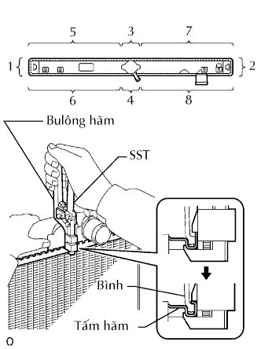

KÉT NƯỚC > LẮP LẠI |
| 1. KIỂM TRA HƯ HỎNG CỦA TẤM HÃM |
Kiểm tra hư hỏng của tấm hãm.
Nếu hai bên của rãnh tấm hãm bị biến dạng, thì không thể lắp lại bình được. Hãy sửa tất cả phần biến dạng bằng kìm.
Nước sẽ bị rò rỉ nếu dưới rãnh tấm hãm bị hỏng hay bị cong. Hãy sửa hay thay thế nó khi cần.
| 2. LẮP BÌNH PHÍA TRÊN VÀ PHÍA DƯỚI CỦA KÉT NƯỚC |
Kiểm tra rằng không có vật thể lạ trong rãnh tấm hãm và lắp gioăng chữ O. Chắc chắn rằng gioăng chữ O không bị xoắn.
Lắp bình chứa không được làm hỏng gioăng chữ O.
Gõ tấm hãm bằng búa nhựa sao cho không có khe hở giữa tấm hãm và bình chứa.
| 3. LẮP SST |
Lắp cụm đột vào phần A của tay nắm dụng cụ đại tu như được chỉ ra trên hình vẽ.
Trong khi bóp tay nắm, hãy điều chỉnh bu lông hãm sao cho kích tước B đạt tiêu chuẩn dưới đây.
| 4. BẺ BỊT TẤM HÃM |
|  |
Eùp nhẹ SST tì vào tấm hãm theo thứ tự như trên hình vẽ. Sau khi lặp lại điều này một vài lần, bẻ hàn kín tấm hãm hoàn toàn bằng cách bóp tay nắm cho đến khi hãm lại bằng bu lông hãm.
Kiểm tra độ cao H của tấm hãm sau khi bẻ hàn kín xong hoàn toàn.
| 5. LẮP NÚT VÒI XẢ KÉT NƯỚC |
Lắp gioăng chữ O mới vào nút xả.
Lắp nút xả.
| 6. KIỂM TRA RÒ RỈ NƯỚC |
Hãy nút các ống vào và ống ra của két nước bằng SST.
Dùng dụng dụng thử nắp két nước, hãy cấp áp suất vào két nước.
Nhúng két nước vào nước.
Kiểm tra rò rỉ.
| 7. LẮP GIÁ BẮT KÉT NƯỚC |
 |
Lắp 2 giá bắt bằng 4 bulông.